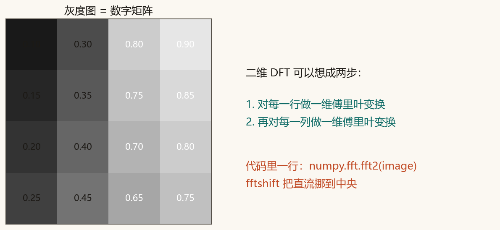
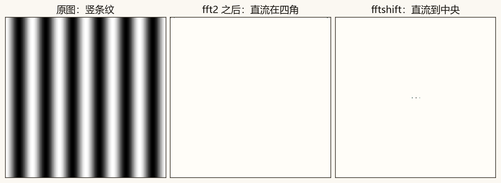
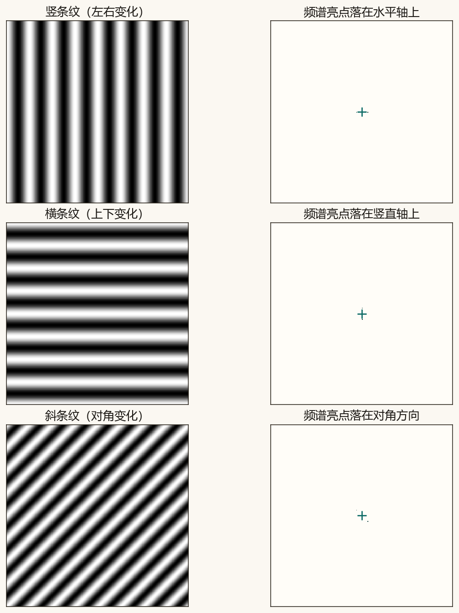
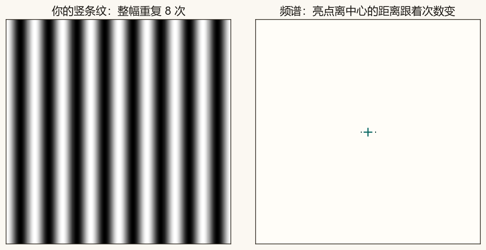

第 10 篇 · 二维频率 · 约 45 分钟
灰度图是一张数字矩阵。对它做二维傅里叶变换，可以想成：先对每一行做一维变换，再对每一列做。竖条纹、横条纹、斜条纹在频谱中央留下的亮点方向不同——方向和条纹「变化」的方向一致。
第 1 篇写过：灰度图就是每个像素一个 0 到 1（或 0 到 255）的数。排成矩形，就是二维数组。对声音做 FFT，是在一串数上找「沿时间」的振动；对图像做二维 DFT，是找「沿左右」和「沿上下」的振动。

fft2 / fftshift。F = fftshift(fft2(image))
numpy.fft.fft2 一次做完行与列。fftshift 把代表平均亮度的直流分量从四角挪到画面正中，方便人眼阅读。
不做 fftshift 时，最亮的直流点贴在四个角上，对称的频谱被撕成四块。挪到中央之后，离中心越远，表示空间频率越高（条纹越密）。

用余弦画出三种合成图，整幅各重复 8 次：

记住一句：频谱亮点指出「图像在哪个方向上发生变化」。竖条纹左右黑白交替，变化方向是水平的，所以亮点在水平轴；横条纹上下交替，亮点在竖直轴。条纹越密，亮点离中央越远。
真实照片的频谱通常是中央一团亮、向外变暗：平滑区域贡献低频，边缘和纹理贡献高频。下一篇会在这些频率上动手做模糊、锐化和去条纹。
拖动重复次数，看竖条纹变密时，两侧亮点如何离开中央。画布用简化的一维示意叠在二维格子上，帮助建立「次数 ↔ 距离」的直觉。
生成竖条纹并做二维频谱，可以写成：
x = np.arange(size)
image = 0.5 + 0.5 * np.cos(2 * np.pi * cycles * x / size)
image = np.tile(image, (size, 1))
spec = np.fft.fftshift(np.fft.fft2(image))完整脚本在 code/ch10_image_fft.py。课文里的 8 次条纹图不读文件顶部的次数。
python code/ch10_image_fft.py终端里应出现「自检通过」，并打印三种条纹峰值相对中央的偏移。课文图是 ch10_matrix.png、ch10_fftshift.png、ch10_stripes.png。ch10_mine.png 只跟随 STRIPE_CYCLES。
若终端中文是乱码，先执行 chcp 65001。图片照样会保存。本篇不需要 OpenCV。
code/ch10_image_fft.py，把 STRIPE_CYCLES = 8 改成 4，运行。打开 ch10_mine.png：条纹更疏，两侧亮点更靠近中央。20，再运行。条纹更密，亮点离中央更远。8，再运行一次。
STRIPE_CYCLES。STRIPE_CYCLES 请用 2 到 40 的整数。
先对每一行做一维变换，再对每一列做。代码里是 numpy.fft.fft2(image)。
把直流分量（平均亮度，频谱里通常最亮的那一点）从四角挪到中央，方便看出低频在中间、高频在外围。
竖条纹亮点在水平轴上，横条纹在竖直轴上。条纹变密，亮点离中央更远。
会看之后就要会改。下一篇在二维频谱上削弱高频做模糊、抬高频做锐化，并试着挖掉条纹对应的那对亮点。